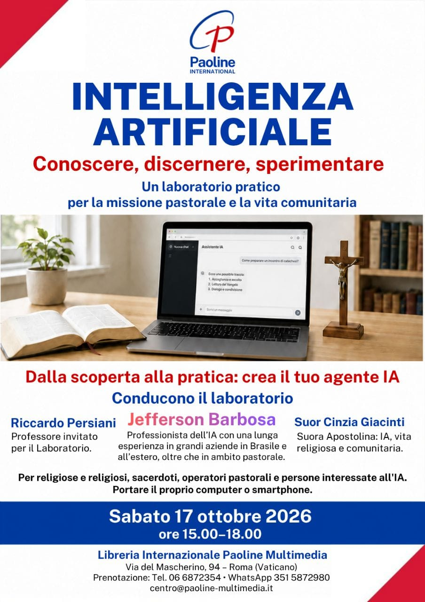

Jefferson Barbosa
Professionista IA con oltre 30 anni di carriera e con esperienze in grandi aziende in Brasile e all’estero. Ha collaborato in opere pastorali dei Gesuiti e del SERMIG nell’Arcidiocesi di São Paulo.
Un pomeriggio pratico per conoscere, discernere e sperimentare l’Intelligenza Artificiale: crea un agente IA semplice, utile e responsabile per la missione pastorale e comunitaria.

Professionista IA con oltre 30 anni di carriera e con esperienze in grandi aziende in Brasile e all’estero. Ha collaborato in opere pastorali dei Gesuiti e del SERMIG nell’Arcidiocesi di São Paulo.
Professore invitato per il Laboratorio di Innovazione.
Suora Apostolina, presenza invitata per collegare l’uso pratico dell’IA alle esigenze concrete della vita religiosa, pastorale e comunitaria.
Durata del Laboratorio: circa 4 ore, dalle 15.00 alle 19.00
Portare il proprio computer o smartphone
Religiose e religiosi, sacerdoti, operatori pastorali, educatori, animatori vocazionali e persone che desiderano conoscere meglio l’IA e applicarla con discernimento alla comunicazione, all’organizzazione e al servizio della comunità.
Via del Mascherino, 94 — Roma (Vaticano)
Tel. 06 6872354 • WhatsApp 351 5872980 • centro@paoline.eu
Carissime e carissimi,
con gioia vi invitiamo a partecipare al laboratorio “Intelligenza Artificiale: conoscere, discernere, sperimentare”, un pomeriggio pensato per metterci in ascolto di un cambiamento che sta già attraversando la nostra vita, la comunicazione, la formazione e la missione.
L’Intelligenza Artificiale non è soltanto una novità tecnica: è un nuovo ambiente umano e culturale, che chiede di essere abitato con cuore libero, intelligenza critica e responsabilità evangelica. Come credenti, consacrati e operatori pastorali, siamo chiamati a domandarci non solo come usare questi strumenti, ma per chi e per che cosa: a servizio della persona, della vocazione, della comunità e dell’annuncio.
Alla luce del Magistero recente, e in sintonia con l’appello a una pace “disarmata e disarmante”, vogliamo imparare a usare questi strumenti non per sostituire l’umano, ma per custodirlo, valorizzarlo e metterlo maggiormente a servizio della missione.
Il laboratorio sarà concreto e partecipativo: ciascuno potrà sperimentare alcune possibilità dell’IA e iniziare a creare un proprio agente IA, utile per la comunicazione, la formazione, l’organizzazione e l’animazione pastorale.
Vi aspettiamo con il vostro computer o smartphone, per vivere insieme un tempo di ricerca, discernimento e speranza.
Vi aspettiamo!
Paoline Multimedia
Libreria Internazionale Paoline Multimedia
Via del Mascherino, 94 — Roma (Vaticano)
Tel. 06 6872354 • WhatsApp 351 5872980
centro@paoline.eu
La locandina è disponibile in italiano, inglese e portoghese brasiliano.
Strumenti di IA, obiettivi e casi pastorali.
Regole, privacy, modello Harness e stile dell’agente.
Hermes, Telegram, WhatsApp e skill essenziali.
Primo agente IA pronto per sostenere una necessità reale.
{kind=link}
{kind=link}
{kind=link}